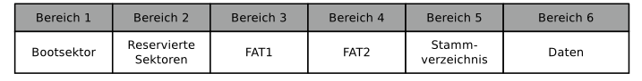
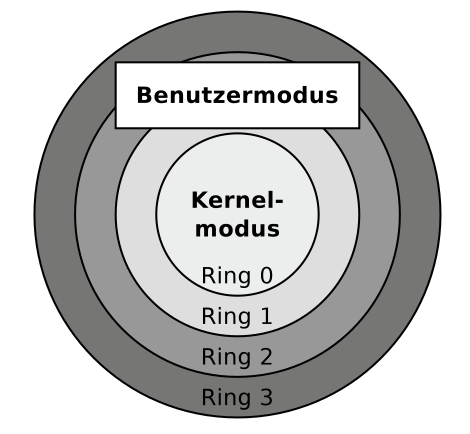
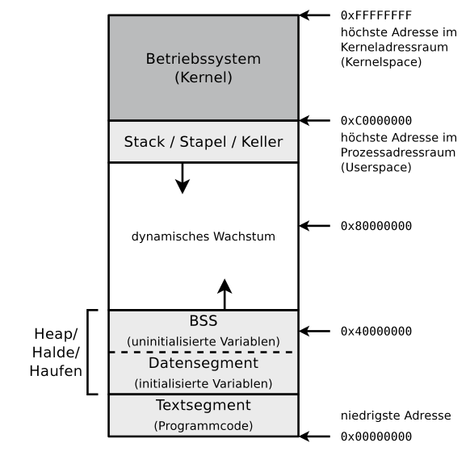
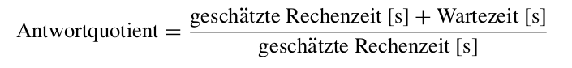

Kapitel:
Grundlagen der
Betriebssysteme
Speicherverwaltung
Dateisysteme
Systemaufrufe
Prozessverwaltung
Prozesswechsel und Scheduling von
Prozessen
Interprozesskommunikation
Grundlagen der
Betriebssysteme
Positionierung des Betriebssystems

Betriebsarten
Die Betriebssysteme lassen sich anhand der Betriebsarten Stapel-
betrieb und Dialogbetrieb, Einzelprogrammbetrieb und Mehrpro-
grammbetrieb sowie Einzelbenutzerbetrieb und Mehrprogramm-
betrieb klassifizieren.
- Stapelbetrieb
Stapelverarbeitung (englisch: Batch Processing) heißt auch Stapelbetrieb oder
Batchbetrieb. Bei dieser Betriebsart muss jedes
Programm mit allen Eingabedaten vollständig vorliegen, bevor die
Abarbeitung beginnen kann. Auch heutige Systeme ermöglichen
Stapelverarbeitung, zum Beispiel in Form von Batch-Dateien oder
Shell-Skripten. Speziell zur Ausführung von Routineaufgaben ist
diese Form des Stapelbetriebs ein nützliches Werkzeug. Üblicherweise
ist Stapelbetrieb interaktionslos. Nach dem Start eines Programms
wird dieses bis zum Ende oder Auftreten eines Fehlers
ohne Interaktion mit dem Benutzer abgearbeitet. Ein Ziel des Stapelbetriebs
ist die maximale Prozessorausnutzung.
- Dialogbetrieb
Bei der Betriebsart Dialogbetrieb (englisch: Time Sharing), die
auch Zeitteilbetrieb heißt, arbeiten mehrere Benutzer an einem
Computersystem gleichzeitig und konkurrierend, indem sie sich
die verfügbare Rechenzeit des Hauptprozessors teilen. Eine Herausforderung
hierbei ist die faire Verteilung der Rechenzeit. Dieses
geschieht mit Hilfe von Zeitscheiben (englisch: Time Slices). Die
Verteilung der Zeitscheiben an die Programme kann nach unterschiedlichen Scheduling-Verfahren erfolgen.
Obwohl die Benutzer gleichzeitig über Terminals an einem
Computer interaktiv arbeiten, sind deren Programme durch den
Mehrprogrammbetrieb unabhängig voneinander.
- Einzelprogrammbetrieb
Beim Einzelprogrammbetrieb (englisch: Singletasking) läuft zu
jedem Zeitpunkt nur ein einziges Programm.
Die quasi-parallele Programm- bzw. Prozessausführung heißt
Mehrprogrammbetrieb (englisch: Multitasking). Mehrere Programme können gleichzeitig (bei mehreren
Prozessoren bzw.
Rechenkernen) oder zeitlich verschachtelt (quasi-parallel) ausgeführt
werden. Die Prozesse werden in kurzen Abständen abwechselnd
aktiviert. Dadurch entsteht der Eindruck der Gleichzeitigkeit.
Ein Nachteil des Mehrprogrammbetriebs ist das Umschalten von
Prozessen, welches einen Verwaltungsaufwand (Overhead) verursacht.
- Mehrprogrammbetrieb
Mehrprogrammbetrieb ist trotz des Verwaltungsaufwand sinnvoll, denn Prozesse müssen häufig auf äußere
Ereignisse warten.
Gründe sind zum Beispiel Benutzereingaben, Eingabe/Ausgabe-
Operationen von Peripheriegeräten oder das Warten auf eine
Nachricht eines anderen Programms. Durch Mehrprogrammbetrieb können Prozesse, die auf ankommende E-Mails,
erfolgreiche
Datenbankoperationen, geschriebene Daten auf der Festplatte oder
ähnliches warten, in den Hintergrund geschickt werden und andere
Prozesse kommen früher zum Einsatz.
Der Verwaltungsaufwand, der bei der quasiparallelen Abarbeitung von Programmen durch die Programmwechsel
entsteht, ist
im Vergleich zum Geschwindigkeitszuwachs zu vernachlässigen.
- Einzelbenutzerbetrieb
Beim Einzelbenutzerbetrieb (englisch: Single-User Mode) steht
der Computer immer nur einem einzigen Benutzer zur Verfügung. Es existieren Single-User-Betriebssysteme mit
Single- und
mit Multitasking-Funktionalität. Beispiele für Betriebssysteme,
die ausschließlich Einzelbenutzerbetrieb bieten, sind MS-DOS,
Microsoft Windows 3x/95/98 und OS/2.
- Mehrbenutzerbetrieb
Beim Mehrbenutzerbetrieb (englisch: Multi-User Mode) können
mehrere Benutzer gleichzeitig mit dem Computer arbeiten. Die
Benutzer teilen sich hierbei die Systemleistung. Die Systemressourcen
müssen mit Hilfe geeigneter Scheduling-Methoden möglichst gerecht verteilt werden. Die verschiedenen
Benutzer müssen (durch Passwörter) identifiziert und Zugriffe auf
Daten und Prozesse anderer Benutzer durch das Betriebssystem
verhindert werden. Beispiele für Betriebssysteme, die Mehrbenutzerbetrieb
ermöglichen, sind Linux und andere Unix-ähnliche
Systeme, Mac OS X, sowie die Server-Versionen der Microsoft
Windows NT-Familie. Dazu gehören auch die Versionen Terminal
Server und MultiPoint Server.
8/16/32/64 Bit-Betriebssysteme
Jedes Betriebssystem arbeitet intern mit Speicheradressen einer
bestimmten Länge. Moderne Betriebssysteme werden üblicherweise
als 64 Bit-Betriebssysteme angeboten. Zahlreiche Linux-
Distributionen sowie mehrere Versionen von Microsoft Windows
sind speziell für ältere Hardware zusätzlich noch als
32 Bit-Betriebssysteme verfügbar. Ein Betriebssystem kann nur so
viele Speichereinheiten ansprechen, wie der Adressraum zulässt.
Darum kann ein 64 Bit-Betriebssystem mehr Speicher ansprechen
als ein 32 Bit-Betriebssystem. Die Größe des Adressraums hängt
Hardwareseitig allerdings vom Adressbus ab.
2^n wobei n für Bit-Betriebssystem steht -> So viele Speichereinheiten können adressiert werden
Echtzeitbetriebssysteme
Echtzeitbetriebssysteme sind Betriebssysteme die Mehrprogrammbetrieb
mit zusätzlichen Echtzeit-Funktionen für die Einhaltung von Zeitbedingungen bieten. Wesentliche
Qualitätskriterien von Echtzeitbetriebssystemen sind die Reaktionszeit und die
Einhaltung von Zeitschranken (englisch: Deadlines).
Die existierenden Echtzeitbetriebssysteme können in die beiden
Gruppen harte Echtzeitbetriebssysteme und weiche Echtzeitbetriebssysteme unterschieden werden.
 Architekturen von Echtzeitbetriebssystemen mit Thin-Kernel und
Nano-Kernel
Architekturen von Echtzeitbetriebssystemen mit Thin-Kernel und
Nano-Kernel
Verteilte Betriebssysteme
Ein verteiltes Betriebssystem ist ein verteiltes System, das die Prozesse
auf mehreren unabhängigen Computern steuert. Die einzelnen
Knoten bleiben den Benutzern und deren Prozessen verborgen.
Das System erscheint als ein einzelner großer
Computer. Dieses Prinzip ist im Bereich der verteilten Systeme
auch unter dem Fachbegriff des Single System Image bekannt.

Architektur des Betriebssystemkerns
Der Betriebssystemkern (englisch: Kernel) enthält die grundlegenden
Funktionen des Betriebssystems. Er ist die Schnittstelle zur
Hardware des Computers.
Die grundlegenden Funktionalitäten sind bei allen Betriebssystemen
gleich. Zu diesen gehört die Bereitstellung von Systemaufrufen,
Funktionen zur Benutzerverwaltung und Prozessverwaltung
inklusive Festlegung der Ausführungsreihenfolge (englisch: Scheduling)
und Interprozesskommunikation, ein Prozessumschalter
(englisch: Dispatcher), die nötigen Gerätetreiber,
Funktionen zur Speicherverwaltung und Dateisysteme zur Verwaltung
von Dateien auf Speicherlaufwerken.
Jedes vollständige Betriebssystem muss die genannten Funktionalitäten
erbringen. Die Entwickler der Betriebssysteme haben
gewisse Freiheiten bei der Positionierung der entsprechenden
Funktionen. Diese können entweder vom Betriebssystemkern
selbst oder von Prozessen, die in diesem Kontext auch Dienst oder
Server heißen, außerhalb des Kerns erbracht werden. Dementsprechend
werden die drei Architekturen monolithischer Kern, minimaler
Kern und hybrider Kern unterschieden.
Eine konkrete Auswirkung der Positionierung ist, dass Funktionen,
die sich im Betriebssystemkerns befinden, vollen Hardwarezugriff
haben. Sie laufen im Adressraum des Kerns, dem sogenannten
Kernelmodus. Wird eine Funktion hingegen
außerhalb des Adressraums des Kerns ausgeführt, kann diese nur
auf ihren virtuellen Speicher, den sogenannten Benutzermodus,
zugreifen.
Schichtenmodell
In der Literatur ist es ein etabliertes
Verfahren, die Komponenten von Betriebssystemen mit Schichtenmodellen
zu visualisieren. Dabei werden die Betriebssysteme mit
ineinander liegenden Schichten logisch strukturiert. Die Schichten
umschließen sich gegenseitig und enthalten von innen nach außen
immer abstraktere Funktione.

Speicherverwaltung
Konzepte zur Speicherverwaltung
- Statische Partitionierung
Bei diesem Konzept der Speicherverwaltung wird der Hauptspeicher
in Partitionen gleicher oder unterschiedlicher Größe unterteilt.
Ein Nachteil dieses Verfahrens ist, dass zwangsläufig
interne Fragmentierung entsteht. Diese Form der Speicherverwaltung
ist somit ineffizient. Dieses Problem ist bei Partitionen
unterschiedlicher Größe weniger stark ausgeprägt, aber keinesfalls
gelöst. Ein weiterer Nachteil ist, dass die Anzahl der Partitionen
die Anzahl möglicher Prozesse limitiert.
Im Idealfall erhalten Prozesse eine möglichst passgenaue Partition,
um möglichst wenig interne Fragmentierung zu verursachen.
Werden Partitionen unterschiedlicher Größe verwendet, gibt
es zwei Möglichkeiten, um Prozessen Partitionen zuzuweisen. Entweder
verwaltet das Betriebssystem eine eigene Prozesswarteschlange
für jede Partition oder es verwaltet eine einzelne Warteschlange
für alle Partitionen. Ein Nachteil mehrerer Warteschlangen ist,
dass bestimmte Partitionen seltener oder eventuell sogar
nie verwendet werden.
- Dynamische Partitionierung
Bei diesem Konzept der Speicherverwaltung weist das Betriebssystem
jedem Prozess eine zusammenhängende Partition mit exakt
der benötigen Größe zu. Dabei kommt es zwangsläufig zu externer
Fragmentierung. Die Lösung dieses Problem ist
eine regelmäßige Defragmentierung des Speichers. Dieses ist aber
nur dann möglich, wenn die Partitionen verschiebbar sind. Verweise
in Prozessen dürfen durch ein Verschieben von Partitionen
nicht ungültig werden.
- Buddy-Speicherverwaltung
Bei der Buddy-Speicherverwaltung gibt es zu Beginn nur einen
Bereich, der den gesamten Speicher abdeckt. Fordert ein Prozess
einen Speicherbereich an, wird dessen Speicherkapazität zur
nächsthöheren Zweierpotenz aufgerundet und ein entsprechender,
freier Bereich gesucht. Existiert kein Bereich dieser Größe, sucht
das Betriebssystem nach einem Bereich doppelter Größe und unterteilt
diesen in zwei Hälften, sogenannte Buddies. Eine Hälfte wird
daraufhin dem anfordernden Prozess zugewiesen. Existiert auch
kein Bereich doppelter Größe, sucht das Betriebssystem einen
Bereich vierfacher Größe, usw.
Wird ein Speicherbereich freigegeben, prüft das Betriebssystem,
ob sich zwei Hälften gleicher Größe wieder zu einem größeren
Speicherbereich zusammenfassen lassen. Es werden aber nur
zuvor vorgenommene Unterteilungen rückgängig gemacht.
Speicheradressierung in der Praxis
Eine der Aufgaben eines Betriebssystems ist,
die Zugriffe der Prozesse auf den Speicher zu organisieren.
Zwei Konzepte der Speicheradressierung - Real Mode und Protected Mode
sind in der Praxis etabliert.
- Real Mode
Der Real Mode, der auch Real Address Mode heißt, ist eine von
zwei möglichen Betriebsarten x86-kompatibler Prozessoren. Dieses
Konzept der Speicheradressierung realisiert einen direkten
Zugriff auf die Speicheradressen des Hauptspeichers durch die
Prozesse. Da der Real Mode keinen Zugriffsschutz
bietet, kann jeder Prozess auf den gesamten adressierbaren Speicher
zugreifen. Darum ist dieses einfache Konzept ungeeignet für
Betriebssysteme mit Mehrprogrammbetrieb.
Zudem wäre das Konzept ungeeignet, um einen für die Prozesse
transparenten Auslagerungsspeicher (englisch: Swap ) zu realisieren.
Ein weiterer Grund, warum der Real Mode für moderne
Betriebssysteme ungeeignet ist, ist die Beschränkung des adressierbaren
Hauptspeichers auf maximal 1 MB. Diese Einschränkung
geht zurück auf den maximaler Speicherausbau eines Intel
8086 Prozessors, dessen Adressbus nur 20 Busleitungen umfasst.
- Protected Mode und virtueller Speicher
Im Protected Mode verwenden die Prozesse keine physischen
Hauptspeicheradressen, sondern einen virtuellen Speicher, der
unabhängig von der verwendeten Speichertechnologie und den
gegebenen Ausbaumöglichkeiten ist. Er besteht aus logischen
Speicheradressen, die von der Adresse 0 aufwärts durchnummeriert
sind. Jeder Prozess läuft ausschließlich in seiner eigenen, von
anderen Prozessen abgeschotteten Kopie des physischen Adress-
raums und jeder Prozess darf nur auf seinen eigenen virtuellen
Speicher zugreifen. Ein weiterer Vorteil des virtuellen Speichers ist, dass mehr
Speicher angesprochen und verwendet werden kann, als physisch im
System existiert.
Der Protected Mode kennt zwei unterschiedliche
Implementierungsvarianten des virtuellen Speichers, die Segmentierung und
das Paging.
- Seitenorientierter Speicher (Paging)
Beim seitenorientierten Speicher, dem sogenannten Paging, werden
die virtuellen Seiten der Prozesse auf physische Seiten im
Hauptspeicher abgebildet.
Die Seitengröße ist bei den allermeisten Hardwarearchitekturen 4 kB.
Das Betriebssystem verwaltet für jeden Prozess eine Seitentabelle
(englisch: Page Table ). In dieser steht, wo sich die einzelnen
Seiten des Prozesses befinden. Die virtuellen Speicheradressen
bestehen aus zwei Teilen. Der werthöhere Teil enthält die Seitennummer
und der wertniedrigere Teil den Offset, also eine Adresse
innerhalb einer Seite. Die Länge der virtuellen Adressen hängt von
der Anzahl der Busleitungen im Adressbus
ab und ist darum 16, 32 oder 64 Bits.
Da die Prozesse nicht am Stück im Hauptspeicher liegen müssen,
spielt externe Fragmentierung keine Rolle.
Interne Fragmentierung kann nur in der letzten Seite jedes Prozesses auftreten.
Virtuelle Speicheradressen übersetzt der Hauptprozessor mit
der Memory Management Unit (MMU) und der Seitentabelle
in physische Adressen. Das Betriebssystem prüft
bei jedem Zugriff auf eine virtuelle Adresse, ob sich deren zugeordnete
physische Adresse im Hauptspeicher oder im Auslagerungsspeicher
(meist auf einer SSD oder Festplatte) befindet. Befinden
sich die Daten im Auslagerungsspeicher, muss das Betriebssystem
die Daten in den Hauptspeicher einlesen. Ist der Hauptspeicher
voll, muss das Betriebssystem andere Daten aus dem Hauptspeicher
in den Auslagerungsspeicher verdrängen
- Segmentorientierter Speicher
(Segmentierung)
Beim segmentorientierten Speicher, der sogenannten Segmentierung,
besteht der virtuelle Speicher der Prozesse aus Segmenten
unterschiedlicher Größe.
Das Betriebssystem verwaltet für jeden Prozess eine Segmenttabelle
(englisch: Segment Table ). Jeder Eintrag der Segmenttabelle
enthält die Größe des Segments und seine Startadresse im Hauptspeicher.
Virtuelle Adressen der Prozesse werden mit Hilfe der
Segmenttabellen in physische Adressen umgerechnet.
Ein Nachteil der Segmentierung ist, dass für jedes Segment, das
im Hauptspeicher abgelegt werden soll, ein entsprechend großer
zusammenhängender Speicherbereich frei sein muss.
Interne Fragmentierung gibt es bei der Segmentierung nicht.
Externe Fragmentierung entsteht wie beim Konzept der dynamischen
Partitionierung, ist aber nicht so deutlich ausgeprägt.
Aktueller Stand beim virtuellen Speicher
Moderne Betriebssysteme (für x86-kompatible Prozessoren) arbeiten
im Protected Mode und verwenden ausschließlich Paging. Die
Segmente Data, Code, Extra und Stack, deren Startadressen im
Hauptspeicher die entsprechenden Register
definieren, decken den gesamten Adressraum ab.
Das Beispiel zeigt den Adressraum eines 32 Bit-Betriebssystems.
Damit ist der vollständige Adressraum jedes Prozesses über den
Offset adressierbar. Segmentierung wird somit effektiv nicht mehr
verwendet. Diese Arbeitsweise heißt Flat Memory-Modell.
Dass die Segmentierung beim Flat Memory-Modell keinen
Speicherschutz mehr bietet wegen des nachgeschalteten Pagings
kein Nachteil. Ein Vorteil dieser Form des Flat Memory-Modells
ist, dass Betriebssysteme leichter auf andere Prozessorarchitekturen
ohne Segmentierung portiert werden können.
Dateisysteme
Technische Grundlagen der Dateisysteme
Dateisysteme adressieren Cluster und nicht Blöcke des Datenträgers.
Jede Datei belegt eine ganzzahlige Anzahl von Clustern. In
der Literatur heißen die Cluster häufig Blöcke und seltener
Zonen. Das führt leicht zu Verwechslungen mit den Sektoren
der Laufwerke, die in der Literatur auch manchmal Blöcke heißen.
Die Clustergröße ist wichtig für die Effizienz des Dateisystems.
Je größer die Cluster sind, desto mehr Speicher
geht durch interne Fragmentierung verloren.
Blockadressierung bei Linux-Dateisystemen
Wird in einem Linux-Dateisystem eine Datei angelegt, wird immer
auch ein Indexknoten, genannt Inode (Index Node), angelegt.
Dieser speichert alle Verwaltungsdaten (Metadaten) einer Datei
außer den Dateinamen. Metadaten sind unter anderem Dateigröße,
Benutzerzugehörigkeit (User-ID = UID), Gruppenzugehörigkeit
(Group-ID = GID), Zugriffsrechte und Datum einer Datei. Jeder
Inode wird über seine im Dateisystem eindeutige Inode-Nummer 3
identifiziert. Neben der wohldefinierten Ablage der Verwaltungsdaten
verweist der Inode jeder Datei auch auf Cluster, welche die
eigentlichen Daten der Datei enthalten.
Alle Linux-Dateisysteme basieren auf dem Funktionsprinzip
der Inodes. Auch ein Verzeichnis ist nichts anderes als eine Datei,
die als Inhalt für jede dem Verzeichnis zugewiesene Datei den
Dateinamen und die zugehörigen Inode-Nummer enthält.
Dateisysteme mit Dateizuordnungstabellen
Das Dateisystem File Allocation Table (FAT) basiert auf der gleichnamigen
Datenstruktur, deren deutsche Bezeichnung Dateizuordnungstabelle
ist. Die FAT ist eine Tabelle fester Größe, die für
jeden Cluster des Dateisystems einen Eintrag enthält, der angibt
ob der Cluster frei, das Medium an dieser Stelle beschädigt oder
der Cluster von einer Datei belegt ist. Im letzten Fall speichert
der FAT-Eintrag die Adresse des nächsten Clusters, der zu dieser
Datei gehört oder er zeigt das Ende der Datei mit dem Eintrag EOF
(End-Of-File) an. Die Cluster einer Datei bilden in der FAT somit
eine verkettete Liste, die sogenannte Clusterkette.
Struktur eines Dateisystems mit einer File Allocation Table (FAT)

- FAT12
Bei FAT12, das 1980 mit dem Betriebssystem QDOS (Quick and
Dirty Operating System), später umbenannt in MS-DOS, erschienen
ist, sind die Clusternummern 12 Bits lang. Damit können maximal
2^12 = 4096 Cluster adressiert werden. Mögliche Clustergrößen
sind 512 Bytes, 1 kB, 2 kB und 4 kB. Die maximale Dateisys-
temgröße 8 beträgt 16 MB.
- FAT16
Aufgrund der Einschränkungen von FAT12, besonders im Hinblick
auf die maximale Dateisystemgröße von nur 16 MB, erschien
schon 1983 FAT16, mit dem 2^16 = 65.536 Cluster pro Dateisystem
adressiert werden können. Weil 12 Cluster reserviert sind, sind
effektiv nur 65.524 Cluster verfügbar. Die Cluster können
zwischen 512 Bytes und 256 kB groß sein.
- FAT32
Als Reaktion auf steigende Festplattenkapazitäten und weil Cluster
≥ 32 kB viel Speicher verschwenden, erschien 1997 das Dateisystem
FAT32. Bei diesem sind die Clusternummern 32 Bits
lang. Da allerdings 4 Bits reserviert sind, können nur 2^28 =
268.435.456 Cluster adressiert werden. Die Cluster können zwischen
512 Bytes und 32 kB groß sein.
- VFAT
Eine 1997 erschienene Erweiterung für die Dateisysteme
FAT12/16/32, die längere Dateinamen ermöglicht, ist Virtual File
Allocation Table (VFAT). Damit wurden unter Windows erstmals
Dateinamen unterstützt, die nicht dem Schema 8.3 folgen. Mit
VFAT können Dateinamen bis zu einer Länge von 255 Zeichen
realisiert werden. Die Kodierung der Zeichen erfolgt via Unicode.
- exFAT
Das jüngste und modernste auf dem Konzept der FAT basierende
Dateisystem ist das 2006 erschienene Extended File Allocation
Table (exFAT). Dieses wurde von der Firma Microsoft speziell
für den Einsatz auf Flash-Speichermedien entwickelt. Aus diesem
Grund verwendet es kein Journal. Ein Journal
würde die Anzahl der Schreibzugriffe erhöhen, was die Lebensdauer
von Flashspeicher verkürzt.
Wie bei FAT32 sind auch in exFAT die Clusternummern 32 Bits
lang. Da aber im Gegensatz zu FAT32 keine reservierten Bits
enthalten sind, können auch bis zu 2^32 = 4.294.967.296 Cluster
adressiert werden. Die Cluster können zwischen 512 Bytes
und 32 MB groß sein.
Journaling-Dateisystem
In einem Journaling-Dateisystem werden Änderungen an einer Datei in einem sogenannten Journal zwischengespeichert,
bevor sie endgültig in den Speicher geschrieben werden(committed). Das Journal bezeichnet einen extra für solche
Änderungen vorgesehenen Speicherplatz.
Dies hat den Vorteil, dass zum Beispiel nach einem Systemabsturz, während eines Kopier-oder Löschvorgangs, wieder
ein konsistenter Zustand der Datei hergestellt werden kann. Dazu wird nach einem Neustart des Betriebssystems, statt
einer einfachen Behebung der Dateisystem-Inkonsistenz und dem damit einhergehenden Verlust der Daten, geprüft,
welche Daten sich im Journal befinden und für welche Dateien ein commit-flag gesetzt ist. Nur gültige Daten werden
anschließend auf der Festplatte gesichert.
Extent-basierte Adressierung
Bei Extent-basierter Adressierung adressieren die Inodes nicht
einzelne Cluster. Stattdessen bilden sie möglichst große Dateibe-
reiche auf zusammenhängende Bereiche (die sogenannten Extents)
auf dem Datenspeicher ab. Statt vieler einzelner
Clusternummern erfordert diese Form der Adressierung nur drei
Werte:
- Die erste Clusternummer des Bereichs (Extents) in der Datei
- Die Größe des Bereichs in der Datei (in Clustern)
- Die Nummer des ersten Clusters auf dem Speichergerät
Copy-on-Write
Arbeitet ein Dateisystem nach dem Prinzip Copy-on-Write (CoW)
ändert es bei einem Schreibzugriff nicht den Inhalt der Originaldatei,
sondern schreibt den veränderten Inhalt als neue Datei in freie
Cluster. Anschließend werden die Metadaten auf
die neue Datei angepasst. Bis die Metadaten angepasst sind, bleibt
die Originaldatei erhalten und kann nach einem Systemabsturz
weiter verwendet werden. Zwei Vorteile von CoW sind eine bessere
Datensicherheit im Vergleich zu Journaling-Dateisystemen
und dass ältere Versionen geänderter Dateien vom Dateisystem
vorgehalten werden, die für den Benutzer zur Verfügung stehen.
Datenzugriffe mit einem Cache
beschleunigen
Moderne Betriebssysteme beschleunigen Dateizugriffe mit einem
Cache im Hauptspeicher, der Page Cache oder Buffer Cache
genannt wird. Wird eine Datei lesend angefragt, schaut
der Betriebssystemkern zuerst, ob die Datei im Page Cache vorliegt.
Bei einem negativem Ergebnis wird sie in diesen geladen.
Der Page Cache ist nie so groß, wie die Menge der gespeicherten
Dateien auf den Speicherlaufwerken des Computersystems.
Darum müssen selten nachgefragte Dateien aus dem Page Cache
verdrängt werden. Wurde eine Datei im Cache verändert, müssen
die Änderungen spätestens beim Verdrängen in der Speicherhierarchie
nach unten durchgereicht (zurückgeschrieben) werden. Ein
optimales Verwenden des Page Cache ist nicht möglich, da Datenzugriffe
nicht deterministisch, also nicht vorhersagbar sind.
Defragmentierung
Ist eine Datei größer als ein Clus-
ter, wird sie auf mehrere verteilt. Zwangsläufig kommt es über die
Zeit in jedem Dateisystem zur Fragmentierung. Das heißt, dass
logisch zusammengehörende Cluster, also die Cluster einer Datei,
nicht räumlich beieinander sind. Im Zeitalter der Festplatten und
geringer Caches konnte sich die Fragmentierung der Daten negativ
auf die Leistungsfähigkeit eines Computers auswirken, denn
liegen die Cluster einer Datei über die Festplatte verteilt, müssen
die Festplattenköpfe bei Zugriffen auf
die Datei eine höhere Anzahl zeitaufwendiger Positionswechsel
durchführen. Darum war es bei der Entwicklung mancher Dateisysteme
wie zum Beispiel ext2 ein Ziel, häufige
Bewegungen der Schwungarme durch eine geschickte Anordnung
der Metadaten zu vermeiden. Bei Solid State Drives spielt die Position der Cluster keine Rolle für die
Zugriffsgeschwindigkeit.
Systemaufrufe
Benutzermodus und Kernelmodus

x86-kompatible Prozessoren enthalten vier Privilegienstufen, die
auch Ringe heißen. Die Privilegienstufen sollen
die Stabilität und Sicherheit verbessern. Jeder Prozess wird
in einem Ring ausgeführt und kann sich nicht selbstständig aus
diesem befreien. Die Realisierung der Ringe geschieht mit Hilfe
des Registers Current Privilege Level (CPL). Dieses speichert die
Ringnummer des aktuell laufenden Prozesses.
Im Ring 0, dem sogenannten Kernelmodus, läuft der Betriebssystemkern.
Prozesse, die im Kernelmodus laufen, haben vollen Zugriff auf die Hardware. Der Kern kann auch
physischen Speicher direkt im Real Mode
adressieren. Im Ring 3, dem sogenannten Benutzermodus, laufen
die übrigen Prozesse. Diese arbeiten ausschließlich mit virtuellem
Speicher.
Moderne Betriebssysteme verwenden ausschließlich zwei Privilegienstufen. Ein Grund dafür ist, dass einige vormals
populäre
Hardware-Architekturen wie zum Beispiel der Alpha-Prozessor,
die PowerPC-Architektur und die MIPS-Architektur, nur zwei Stufen enthalten.
Prozessverwaltung
Scheduling ist ein extra Kapitel!
Prozesszustände
Jeder Prozess befindet sich zu jedem Zeitpunkt in einem bestimmten
Zustand. Wie viele unterschiedliche Zustände es gibt, hängt
vom Zustands-Prozessmodell des verwendeten Betriebssystems
ab. Prinzipiell genügen der Prozesszustand rechnend (englisch:
running) für den Prozess, dem der Hauptprozessor zugeteilt ist
und der Zustand untätig (englisch: idle) für die Prozesse, die auf
die Zuteilung des Prozessors warten.
Prozesszustände
Struktur eines Linux-Prozesses auf einem 32 Bit-Systemen im
Speicher

Bei der standardmäßigen Aufteilung des virtuellen Adressraums
auf einem 32 Bit-System reserviert Linux standardmäßig 25 % für
den Betriebssystemkern (Kernelmodus) und 75 % für die Prozesse
im Benutzermodus. Auf solch einem System kann jeder laufende
Prozess damit bis zu 3 GB Speicher verwenden. Die
Struktur von Prozessen auf 64 Bit-Systemen unterscheidet sich
nicht von 32 Bit-Systemen. Einzig der Adressraum ist größer und
damit die mögliche Ausdehnung der Prozesse im Speicher.
Prozesse erzeugen mit fork
Der Systemaufruf fork ist unter Linux und anderen Unix-(ähnlichen)
Betriebssystemen die üblicherweise verwendete Möglichkeit,
einen neuen Prozess zu erzeugen. Ruft ein Prozess fork
auf, erzeugt das Betriebssystem eine identische Kopie dieses Prozesses.
Der aufrufende Prozess heißt in diesem Kontext Elternprozess
(englisch: Parent Process) und in der deutschsprachigen
Literatur manchmal Vaterprozess. Der neu erzeugte Prozess
heißt Kindprozess und er hat nach der Erzeugung den gleichen
Programmcode wie der Elternprozess. Auch die Befehlszähler
haben den gleichen Wert, verweisen also auf die gleiche Zeile
im Programmcode. Die Speicherbereiche von Kindprozess und
Elternprozess sind, wie bei allen anderen Prozessen auch, streng
voneinander getrennt. Kurz gesagt: Kindprozess und Elternprozess
besitzen ihren eigenen Prozesskontext.
Prozesse ersetzen mit exec
Mit dem Systemaufruf fork ist es möglich, einen Kindprozess als
identische Kopie des aufrufenden Prozesses zu erzeugen. Soll aber
ein ganz neuer Prozess und keine Kopie erstellt werden, muss der
Systemaufruf exec verwendet werden, um einen Prozess durch
einen anderen zu ersetzen. In diesem Fall erbt der neue Prozess die
PID des aufrufenden Prozesses.
Soll aus einem Prozess wie beispielsweise aus einem Kommandozeileninterpreter
(Shell) heraus ein Programm gestartet werden,
muss zuerst mit fork ein neuer Prozess erzeugt und dieser
anschließend mit exec ersetzt werden. Wird vor einem Aufruf
von exec kein neuer Prozess mit fork erzeugt, geht der Elternprozess verloren.
Prozesswechsel und Scheduling von
Prozessen
Zu den Aufgaben von Betriebssystemen mit Mehrprogrammbetrieb
gehört das Dispatching und das Scheduling.
Dispatching ist
das Umschalten des Hauptprozessors beim Prozesswechsel.
Scheduling ist das Festlegen des Zeitpunkts des Prozesswechsels und
der Ausführungsreihenfolge der Prozesse.
Die existierenden Schedulingverfahren werden in zwei Klassen unterschieden:
- Nicht-präemptives (nicht-verdrängendes) Scheduling
Dabei behält ein Prozess, der vom
Scheduler den Hauptprozessor zugewiesen bekommen hat, die
Kontrolle über diesen bis zu seiner vollständigen Fertigstellung
oder bis er die Kontrolle freiwillig wieder abgibt. Problematisch
bei solchen Schedulingverfahren ist, dass ein Prozess den Prozessor
so lange belegen kann wie er will.
- Präemptives (verdrängendes) Scheduling.
Dabei kann einem
Prozess der Prozessor vor seiner Fertigstellung entzogen werden.
In einem solchen Fall pausiert der Prozess so lange, bis
der Scheduler ihm erneut den Prozessor zuteilt. Ein Nachteil des
verdrängenden Schedulings ist der höhere Verwaltungsaufwand.
Allerdings überwiegen die Vorteile des präemptivem Schedulings,
weil Betriebssysteme damit auf Ereignisse reagieren und
Prozesse mit einer höheren Priorität berücksichtigen können.
Prioritätengesteuertes Scheduling
Beim prioritätengesteuerten Scheduling bekommt immer der Prozess
mit der höchsten Priorität im Zustand bereit als nächstes
den Prozessor zugewiesen. Die Prozesse werden somit nach ihrer
Wichtigkeit bzw. Dringlichkeit abgearbeitet. Die Priorität kann von
verschiedenen Kriterien abhängen, zum Beispiel benötigte Ressourcen,
Rang des Benutzers, geforderte Echtzeitkriterien usw.
Prioritätengesteuertes Scheduling kann verdrängend (präemptiv)
oder nicht-verdrängend (nicht-präemptiv) realisiert sein und
die Vergabe der Prioritäten kann statisch oder dynamisch erfolgen.
First Come First Served
Das Schedulingverfahren First Come First Served (FCFS) funktioniert
nach dem Prinzip First In First Out (FIFO). Die Prozesse
bekommen den Prozessor entsprechend ihrer Ankunftsreihenfolge
zugewiesen. Laufende Prozesse werden bei FCFS nicht unterbrochen.
Es handelt sich somit um nicht-verdrängendes Scheduling.
Da alle Prozesse entsprechend ihrer Ankunftsreihenfolge
berücksichtigt werden, ist das Verfahren fair. Allerdings kann die
mittlere Wartezeit unter Umständen hoch sein, da Prozesse mit
kurzer Abarbeitungszeit eventuell eine lange Zeit warten müssen,
wenn vor ihnen Prozesse mit langer Abarbeitungszeit eingetroffen
sind. FCFS eignet sich unter anderem für Stapelverarbeitung.
Round Robin
Bei Round Robin (RR), das in der Literatur auch Zeitscheiben-
verfahren heißt, werden Zeitscheiben (englisch: Time Slices)
mit einer festen Dauer definiert. Die Prozesse werden in einer
zyklischen Warteschlange eingereiht und nach dem Prinzip FIFO (First In, First Out)
abgearbeitet. Der erste Prozess der Warte-
schlange erhält für die Dauer einer Zeitscheibe Zugriff auf den
Prozessor. Nach dem Ablauf der Zeitscheibe wird dem Prozess
der Zugriff auf den Prozessor wieder entzogen und er wird am
Ende der Warteschlange eingereiht. Bei Round Robin handelt sich
somit um verdrängendes Scheduling. Wird ein Prozess erfolgreich
beendet, wird er aus der Warteschlange entfernt. Neue Prozesse
werden am Ende der Warteschlange eingereiht.
Shortest Job First / Shortest Process Next
Bei Shortest Job First (SJF), das auch Shortest Process Next
(SPN) heißt, erhält der Prozess mit der kürzesten Abarbeitungszeit
als erster Zugriff auf den Prozessor. Es handelt sich um nichtverdrängendes
Scheduling. SJF ist nicht fair, denn Prozesse mit
kurzer Abarbeitungszeit werden bevorzugt und Prozesse mit langer
Abarbeitungszeit erhalten eventuell erst nach einer langen Wartezeit
Zugriff auf den Prozessor oder sie verhungern.
Das größte Problem von SJF ist, dass für jeden Prozess bekannt
sein muss, wie lange er bis zu seiner Terminierung braucht, also wie
lange seine Abarbeitungszeit ist.
Shortest Remaining Time First
Verdrängendes SJF heißt Shortest Remaining Time First (SRTF).
Wird ein neuer Prozess erstellt, wird die Restlaufzeit des aktuell
rechnenden Prozesses mit jedem Prozess in der Liste der wartenden
Prozesse verglichen. Hat der gegenwärtig rechnende Prozesses die
kürzeste Restlaufzeit, darf er weiterrechnen. Haben ein oder mehr
Prozesse in der Liste der wartenden Prozesse eine kürzere Abarbeitungszeit
bzw. Restlaufzeit, erhält der Prozess mit der kürzesten
Restlaufzeit Zugriff auf den Prozessor. Die Prozesse in der Liste
der wartenden Prozesse werden nur dann mit dem aktuell rechnenden
Prozess verglichen, wenn ein neuer Prozess erstellt wird.
Solange kein neuer Prozess eintrifft, wird auch kein rechnender
Prozess unterbrochen.
Die Nachteile von SJF gelten auch für die verdrängenden Variante.
Longest Job First
Bei Longest Job First (LJF) erhält der Prozess mit der längsten
Abarbeitungszeit als erster Zugriff auf den Prozessor. Es handelt
sich um nicht-verdrängendes Scheduling. LJF ist nicht fair, da Prozesse
mit langer Abarbeitungszeit bevorzugt werden und Prozesse
mit kurzer Abarbeitungszeit möglicherweise erst nach sehr langer
Wartezeit Zugriff auf den Prozessor erhalten oder verhungern.
Genau wie bei SJF und SRTF muss auch bei LJF für jeden Prozess
bekannt sein, wie lange er den Prozessor bis zu seiner Abarbeitung
benötigt.
Longest Remaining Time First
Verdrängendes LJF heißt Longest Remaining Time First (LRTF).
Wird ein neuer Prozess erstellt, wird genau wie bei SRTF die Restlaufzeit
des gegenwärtig rechnenden Prozesses mit jedem Prozess
in der Liste der wartenden Prozesse verglichen. Hat der rechnende
Prozess die längste Restlaufzeit, darf er weiterrechnen. Haben ein
oder mehr Prozesse in der Liste der wartenden Prozesse eine längere
Abarbeitungszeit bzw. Restlaufzeit, erhält der Prozess mit
der längsten Restlaufzeit Zugriff auf den Prozessor. Die Prozesse
in der Liste der wartenden Prozesse werden nur dann mit dem rechnenden
Prozess verglichen, wenn ein neuer Prozess erstellt wird.
Solange kein neuer Prozess eintrifft, wird auch kein rechnender
Prozess unterbrochen.
Die Nachteile von LJF gelten auch für die verdrängende Variante.
Die (Rest-)laufzeit der Prozesse muss bekannt sein oder abgeschätzt
werden, was in der Praxis in den allermeisten Fällen unrealistisch
ist. Das Verfahren ist nicht fair, da Prozesse mit kurzer
Abarbeitungszeit verhungern können.
Highest Response Ratio Next
Das Schedulingverfahren Highest Response Ratio Next (HRRN)
ist eine faire Variante von SJF/SRTF/LJF/LRTF, denn es berücksichtigt
das Alter der Prozesse, um ein Verhungern zu vermeiden.
Das für die Ausführungsreihenfolge der Prozesse entscheidende
Kriterium ist ein Antwortquotient (englisch: Response Ratio), den
der Scheduler für jeden Prozess mit Hilfe der folgenden Formel
berechnet:

Der Antwortquotienten hat bei der Erzeugung eines Prozesses den
Wert 1 und steigt bei kurzen Prozessen schnell an. Das Schedulingverfahren
arbeitet dann effizient, wenn der Antwortquotient aller
Prozesse im System niedrig ist. Nach der Beendigung oder bei der
Blockade eines Prozesses bekommt der Prozess mit dem höchsten
Antwortquotient den Prozessor zugewiesen. Damit ist sichergestellt,
dass kein Prozess verhungert. Das macht HRRN zu einem
fairen Verfahren.
Da bei HRRN genau wie bei SJF/SRTF/LJF/LRTF die Laufzeiten
der Prozesse durch statistische Erfassungen der Vergangenheit
abgeschätzt werden müssen, ist das Verfahren in der Praxis meist
nicht einsetzbar.
Earliest Deadline First
Der Fokus beim Schedulingverfahren Earliest Deadline First
(EDF) ist, dass die Termine zur Fertigstellung (Deadlines) der
Prozesse eingehalten werden. Die Prozesse im Zustand bereit
werden anhand ihrer jeweiligen Deadline geordnet. Der Prozess,
dessen Deadline am nächsten ist, bekommt als nächstes den Pro-
zessor zugewiesen. Eine Überprüfung und gegebenenfalls Neuorganisation
der Warteschlange findet immer dann statt, wenn ein
neuer Prozess in den Zustand bereit wechselt oder ein aktiver
Prozess terminiert. EDF kann verdrängend oder nicht-verdrängend realisiert werden.
Fair-Share-Scheduling
Das Schedulingverfahren Fair-Share verteilt die verfügbaren Ressourcen
zwischen Gruppen von Prozessen in einer fairen Art und
Weise. Die Rechenzeit wird den Benutzern und nicht den Prozessen
zugeteilt. Das führt dazu, dass die Rechenzeit die ein
Benutzer erhält, unabhängig von der Anzahl seiner Prozesse ist.
Die Ressourcenanteile, die die Benutzer erhalten, heißen Shares.
Multilevel-Scheduling
Einige der bislang vorgestellten Schedulingverfahren (SJF, SRTF,
LJF, LRTF und HRRN) sind in der Praxis meist untauglich, weil die
Laufzeiten der Prozesse im Voraus nicht bekannt sind und Abschätzungen
durch statistische Erfassung aus der Vergangenheit keine
exakten Ergebnisse liefern. Von den übrigen vorgestellten Verfahren
(Prioritätengesteuertes Scheduling, FCFS, RR, EDF und Fair-
Share) erfordert jedes Kompromisse bezüglich der unterschiedlichen
Scheduling-Kriterien.
Eine Möglichkeit, damit umzugehen,
ist die Implementierung von statischem oder alternativ von dynamischem
Multilevel-Scheduling.
- Statischen Multilevel-Scheduling
Beim statischen Multilevel-Scheduling wird die bereit-Liste
in mehrere Teillisten unterteilt. Für jede Teilliste kann eine andere
Scheduling-Strategie verwendet werden. Die Teillisten haben
unterschiedliche Prioritäten oder Zeitmultiplexe (z. B. 80 %:20 %
oder 60 %:30 %:10 %). Somit ist statisches Multilevel-Scheduling
geeignet, um zeitkritische von zeitunkritischen Prozessen zu trennen.
Interprozesskommunikation
Kritische Abschnitte und
Wettlaufsituationen
Laufen mehrere parallel ausgeführte Prozesse, unterscheidet man
kritische von unkritischen Abschnitten. Bei unkritischen Abschnitten
greifen die Prozesse gar nicht oder nur lesend auf gemeinsame
Daten zu. Bei kritischen Abschnitten hingegen greifen die Prozesse
lesend und schreibend auf gemeinsame Daten zu. Um Fehler
zu vermeiden, dürfen kritische Abschnitte nicht von mehreren
Prozessen gleichzeitig durchlaufen werden. Damit Prozesse
konfliktfrei auf einen gemeinsam genutzten Speicher und die
darauf abgelegten Daten zugreifen können, muss das Betriebssystem
einen Mechanismus zum wechselseitigen Ausschluss (eng-
lisch: Mutual Exclusion) bereitstellen.
Synchronisation von Prozessen
Bei der Prozessinteraktion unterscheidet man den funktionalen und
den zeitlichen Aspekt. Aus funktionaler Sicht ermöglicht die Prozessinteraktion
die Kommunikation und die Kooperation zwischen
Prozessen.
Zudem gibt es bei der Prozessinteraktion auch einen zeitlichen
Aspekt, nämlich die Synchronisation. Kommunikation und Kooperation
basieren beide auf der Synchronisation, denn sie benötigen
eine zeitliche Abstimmung zwischen den Interaktionspartnern, um
korrekte Ergebnisse zu erhalten. Synchronisation ist somit die elementarste
Form der Interaktion. Aus diesem Grund
beschreibt dieses Kapitel zuerst die Synchronisation von Prozessen
und anschließend unterschiedliche Formen der Kommunikation und der Kooperation.
Kommunikation von Prozessen
Betriebssysteme ermöglichen den Prozessen die Interprozesskommunikation
durch die Nutzung von gemeinsamem Speicher,
Nachrichtenwarteschlangen, Pipes und Sockets. Die folgenden
Abschnitte beschreiben diese vier Kommunikationskonzepte.
- Gemeinsamer Speicher (System V)
Interprozesskommunikation über einen gemeinsamen Speicher
(englisch: Shared Memory ) ist speicherbasierte Kommunikation.
Die dabei verwendeten gemeinsamen Speichersegmente sind
Speicherbereiche, auf die mehrere Prozesse direkt zugreifen können.
Die Prozesse müssen die Zugriffe selbst
koordinieren und sicherstellen, dass ihre Speicherzugriffe sich
gegenseitig ausschließen. Ein lesender Prozess darf nichts aus dem
gemeinsamen Speicher lesen, bevor der schreibende Prozess fertig
geschrieben hat. Ist die Koordinierung der Zugriffe nicht sorgfältig,
kommt es zu Inkonsistenzen.
- POSIX-Speichersegmente
Eine alternative Möglichkeit um gemeinsame Speichersegmente
zu realisieren bietet der Standard POSIX. Die POSIX-Schnittstelle
ist einige Jahre nach System V entstanden und gilt dementsprechend
als moderner und leichter zugänglich. Ein Nachteil kann
in bestimmten Einsatzszenarien allerdings sein, dass besonders in
älteren Linux-Distributionen und anderen älteren Unix-ähnlichen
Betriebssystemen die POSIX-Interprozesskommunikation nicht
immer komplett oder gar nicht verfügbar ist. Dieser Nachteil wird
in der Praxis aber immer mehr abgeschwächt, da eine Unterstützung
der POSIX-Schnittstelle in Linux und anderen Unix-
ähnlichen Betriebssystemen schon mehrere Jahre Stand der Technik ist.
- Kommunikationskanäle (Pipes)
Moderne Betriebssysteme ermöglichen Interprozesskommunikation
über zwei verschiedene Arten von Pipes, nämlich anonyme
und benannte Pipes.
- Anonyme Pipes
Eine anonyme Pipe ist ein gepufferter
Kommunikationskanal zwischen zwei Prozessen und arbeitet
nach dem FIFO-Prinzip.
Versucht ein Prozess Daten in eine volle Pipe zu schreiben, ist
der Prozess so lange blockiert, bis es wieder freien Platz in der Pipe
gibt. Ähnlich ist es bei Lesezugriffen. Versucht ein Prozess aus
einer leeren Pipe Daten zu lesen, ist der Prozess so lange blockiert,
bis Daten vorliegen.
Das Anlegen einer Pipe geschieht unter Linux mit dem Systemaufruf pipe.
Dabei legt der Betriebssystemkern einen Inode und
zwei Zugriffskennungen bzw. Deskriptoren an.
- Benannte Pipes
Außer den anonymen Pipes ermöglichen moderne Betriebssysteme
auch benannte Pipes. Diese
heißen auch einfach FIFO.
Über benannte Pipes können auch nicht eng miteinander verwandte
Prozesse kommunizieren. Zudem ermöglichen benannte
Pipes bidirektionale Kommunikation zwischen zwei Prozessen.
Jede benannte Pipe ist durch einen Eintrag im Dateisystem
repräsentiert. Aus diesem Grund bleiben sie im Gegensatz zu
anonymen Pipes auch dann erhalten, wenn kein Prozess auf sie
zugreift.
Das Anlegen einer Pipe geschieht unter Linux mit dem
Systemaufruf mkfifo bzw. einer gleichnamigen Standard-
Bibliotheksfunktion.
- Sockets
Soll Kommunikation nicht nur zwischen Prozessen auf einem
Computer, sondern über Rechnergrenzen hinweg möglich sein,
sind Sockets die geeignete Form der Interprozesskommunikation.
Ein Benutzerprozess kann einen Socket vom Betriebssystem anfordern,
und über diesen anschließend Daten versenden und empfangen.
Das Betriebssystem verwaltet alle benutzten Sockets und
die zugehörigen Verbindungsinformationen. Die Adressierung der
einzelnen Prozesse auf einem Computer geschieht mit Hilfe von
Portnummern. Deren Vergabe erfolgt beim Verbindungsaufbau.
Eine weitere positive Eigenschaft von Sockets ist, dass sie Kommunikation
zwischen Prozessen ermöglichen, die in verschiedenen
Betriebssystemen laufen.
Je nach verwendetem Transportprotokoll, das zur Kommunikation
zwischen den Prozessen verwendet wird, unterscheidet man
verbindungslose und verbindungsorientierte Sockets.
- Verbindungslose Sockets
Verwenden das Transportprotokoll UDP
- Verbindungsorientierte Sockets
Verwenden das Transportprotokoll TCP